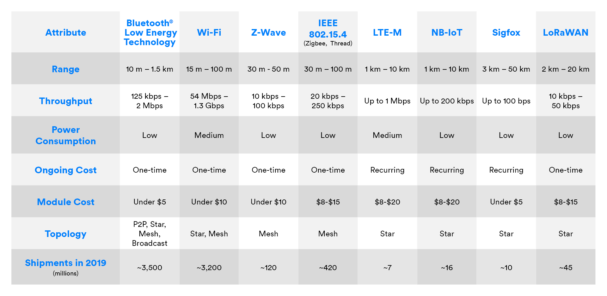
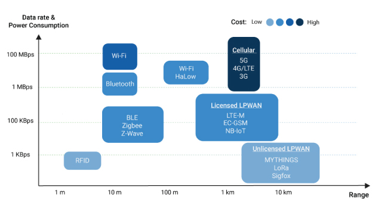
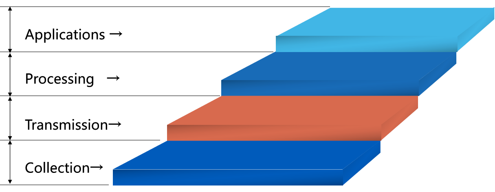

无线与物联网安全
Security是什么？Security要实现CIA(confidentiality, integrity, availability)，除此之外还有Authenticity, Access Control, Non-reputability, Accountability
无线通信和物联网基础
无线信道
- Eavesdropping is easy 很容易窃听
- Injecting bogus messages into the network is easy 很容易将虚假消息注入网络
- Replaying previously recorded messages is easy 很容易重放攻击
- Illegitimate access to the network and its services is easy 很容易非法访问网络和服务
- Denial of service is easily achieved by jamming 很容易通过发送大量垃圾实现DoS
常用的无线通信方式
 1
 2
物联网分层

硬件设备
-
传感器 sensor
-
微处理器 Microprocessor
-
通信芯片 Communication Chip 最耗电
-
供电装置 电池
-
联网终端规模化：物联网时代每一件物品均具有通信功能，成为网络终端。5-10年内联网终端规模有望突破百亿。
-
感知识别普适化：无所不在的感知和识别将传统上分离的物理世界和信息世界高度融合
-
异构设备互联化：各种异构设备利用无线通信模块和协议自组成网，异构网络通过“网关”互通互联。
-
管理处理智能化：物联网高效可靠组织大规模数据，与此同时，运筹学，机器学习，数据挖掘，专家系统等决策手段将广泛应用于各行各业。
-
应用服务链条化：以工业生产为例，物联网技术覆盖从原材料引进，生产调度，节能减排，仓储物流到产品销售，售后服务等各个环节。
无线和物联网安全
无线通信是非常脆弱的
- 广播通信，比有限网络更容易受到窃听和干扰
- 便携可移动的
- 设备的资源受限，容易遭受DoS攻击
- 一些设备可能处于无人看管的情况，可以直接物理攻击
攻击方式 P18 防御方式 P19
我们可以将物联网的安全需求归结为如下几个方面：
- 物联网接入安全 IoT access security: 首先，一个感知节点不能被未经过认证授权的节点或系统访问，这涉及到感知节点的信任管理、身份认证、访问控制等方面的安全需求。因此，传感器网络除了可能遭受同现有网络相同的安全威胁外，还可能受到恶意节点的攻击、传输的数据被监听或破坏、数据的一致性差等安全威胁。
- 物联网通信安全 IoT communication security: 由于物联网中的通信终端呈指数增长，而现有的通信网络承载能力有限，当大量的网络终端节点接入现有网络时，将会给通信网络带来更多的安全威胁。首先，大量终端节点的接入肯定会带来网络拥塞，而网络拥塞会给攻击者带来可趁之机，从而对服务器产生拒绝服务攻击；其次，由于物联网中的设备传输的数据量较小，一般不会采用复杂的加密算法来保护数据，从而可能导致数据在传输的过程中遭到攻击和破坏；最后，感知层和网络层的融合也会带来一些安全问题。另外，在实际应用中，大量使用无线传输技术，而且大多数设备都处于无人值守的状态，使得信息安全得不到保障，很容易被窃取和恶意跟踪。而隐私信息的外泄和恶意跟踪给用户带来了极大的安全隐患。
- 物联网数据隐私安全 IoT data privacy security: 随着物联网的发展和普及，数据呈现爆炸式增长，个人和企业追求更高的计算性能，软、硬件维护费用日益增加，使得个人和企业的设备已无法满足需求。因此云计算、网格计算、普适计算、云计算等应运而生。虽然这些新型计算模式解决了个人和企业的设备需求，但同时也使他们承担着对数据失去直接控制的危险。因此，针对数据处理中的外包数据的安全隐私保护技术显得尤为重要了。由于传统的加密算法在对密文的计算、检索方面表现的差强人意，故需要研究可在密文状态下进行检索和运算的加密算法就显得十分必要了。
- 物联网应用安全IoT computing system security: 物联网的应用领域非常广泛，渗透到了现实生活中的各行各业，由于物联网本身的特殊性，其应用安全问题除了现有网络应用中常见的安全威胁外，还存在更为特殊的应用安全问题。物联网应用中，除了传统网络的安全需求（如认证、授权、审计等）外，还包括物联网应用数据的隐私安全需求和服务质量需求，应用部署安全需求等。
| 安全角度 | 安全需求 |
|---|---|
| 物联网接入安全 IoT access security | 首先，一个感知节点不能被未经过认证授权的节点或系统访问，这涉及到感知节点的信任管理、身份认证、访问控制等方面的安全需求。因此，传感器网络除了可能遭受同现有网络相同的安全威胁外，还可能受到恶意节点的攻击、传输的数据被监听或破坏、数据的一致性差等安全威胁。 |
| 物联网通信安全 IoT communication security | 由于物联网中的通信终端呈指数增长，而现有的通信网络承载能力有限，当大量的网络终端节点接入现有网络时，将会给通信网络带来更多的安全威胁。首先，大量终端节点的接入肯定会带来网络拥塞，而网络拥塞会给攻击者带来可趁之机，从而对服务器产生拒绝服务攻击；其次，由于物联网中的设备传输的数据量较小，一般不会采用复杂的加密算法来保护数据，从而可能导致数据在传输的过程中遭到攻击和破坏；最后，感知层和网络层的融合也会带来一些安全问题。另外，在实际应用中，大量使用无线传输技术，而且大多数设备都处于无人值守的状态，使得信息安全得不到保障，很容易被窃取和恶意跟踪。而隐私信息的外泄和恶意跟踪给用户带来了极大的安全隐患。 |
| 物联网数据隐私安全 IoT data privacy security | 随着物联网的发展和普及，数据呈现爆炸式增长，个人和企业追求更高的计算性能，软、硬件维护费用日益增加，使得个人和企业的设备已无法满足需求。因此云计算、网格计算、普适计算、云计算等应运而生。虽然这些新型计算模式解决了个人和企业的设备需求，但同时也使他们承担着对数据失去直接控制的危险。因此，针对数据处理中的外包数据的安全隐私保护技术显得尤为重要了。由于传统的加密算法在对密文的计算、检索方面表现的差强人意，故需要研究可在密文状态下进行检索和运算的加密算法就显得十分必要了。 |
| 物联网应用安全IoT computing system security | 物联网的应用领域非常广泛，渗透到了现实生活中的各行各业，由于物联网本身的特殊性，其应用安全问题除了现有网络应用中常见的安全威胁外，还存在更为特殊的应用安全问题。物联网应用中，除了传统网络的安全需求（如认证、授权、审计等）外，还包括物联网应用数据的隐私安全需求和服务质量需求，应用部署安全需求等。 |
- 物联网感知安全物联网的感知节点接入和用户接入离不开身份认证和访问控制等信息安全技术。
- 物联网数据安全物联网的保密性要求信息具有只能被授权用户使用，不被泄漏的特征。常用的保密技术包括防侦收、防辐射、信息加密、物理保密。
- 物联网安全控制物联网安全控制要求信息具有不可抵赖性，即信息交互过程中所有参与者都不可能否认或者抵赖曾经完成的操作和承诺的特性。
- 物联网安全审计物联网安全审计要求物联网具有保密性与完整性。保密性要求信息不能被泄漏给未授权的用户；完整性要求信息不受各种原因的破坏。
- 物联网隐私安全除去上述安全指标之外，物联网中还需要考虑隐私的问题。
蓝牙安全
蓝牙是用于短距离数据交换的无线通信技术。
蓝牙技术的物理层采用跳频扩频结合的调制技术，频段范围是2.402GHz-2.480GHz，通信速率一般能达到1Mbps左右。蓝牙设备有两种可能的角色，分别为主设备和从设备。同一个蓝牙设备可以在这两种角色之间转换。一个主蓝牙设备可以最多同时和7个活跃的从设备或者255个不活跃的从设备通信。2021年7月，蓝牙技术联盟推出了蓝牙5.3规范。
蓝牙无线通讯技术从4.0开始包含两个蓝牙标准。经典蓝牙可以用数据量比较大的传输，如：图像、视频、音乐等。低功耗蓝牙的数据传输用于实时性要求比较高但数据速率比较低的产品，如智能穿戴设备、遥控类的，鼠标，键盘，遥控鼠标(Air Mouse)，还有传感设备的数据发送，如心跳带，血压计，温度传感器等等、其应用的行业和方向也比较广泛。
蓝牙分为三个安全模式
- Security Mode 1: Non-Secure Mode 这种模式下的蓝牙设备是不分敌我的，并且不采用任何机制来阻止其他蓝牙设备建立连接。如果远程设备发起配对、认证或加密请求，则安全模式1设备将接受该请求而不加任何认证。
- Security Mode 2: Service level enforced security mode
- Security Mode 3: Link-level enforced security mode
现在蓝牙安全面对的问题
| Security Issue | Remarks |
|---|---|
| Strength of the Random Number Generator (RNG) is unknown. | RNG may produce periodic numbers that reduces the strength of authentication mechanism. |
| Short PINs are allowed. | Such weak PINs are used to generate link and encryption keys that are easily predictable. |
| Encryption key length is negotiable. | More robust initialization key generation procedure should be developed. |
| No user authentication exists. | As only device authentication is provided, application security and user authentication can be employed. |
| Stream cipher is weak and key length is negotiable. | Robust encryption procedure and minimum key length should be decided and passed as an agreement. |
| Privacy can be compromised if the BD_ADDR is captured and associated with a particular user. | Once the BD_ADDR is associated with a particular user, that user’s activity can be logged. So, loss of privacy can be compromised. |
| Device authentication is simple shared key challenge response. | One-way authentication may be subjected to man-in-middle attacks. Mutual authentication is a good idea to provide verification. |
RFID安全
RFID分为3 Components
- Transceiver - Tag Reader
- Transponder - RFID tag
- Antenna
他的特点：
- Passive device – receives power from reader (被动式，能量来自Reader)
- Range of up to several meters （短距离）
- In effect a “smart label”: simply calls out its (unique) name and/or static data （只能读取静态数据，起标签作用。算力很低）
- Basic Tag只能读取，也有可读写的Tag
RFID没有加密，有很大的隐私泄露问题。解决方案
- 摧毁RFID标签，比如超市货物的标签
- 重命名RFID标签
- 控制标签的距离，限制识别距离
- 立法
WEP & WPA & WPA2
WEP非常不安全，使用RC4加密。
Wireless Connectivity Options for IoT Applications – Technology Comparison https://www.bluetooth.com/blog/wireless-connectivity-options-for-iot-applications-technology-comparison/ 2: 6 Leading Types of IoT Wireless Tech and Their Best Use Cases https://behrtech.com/blog/6-leading-types-of-iot-wireless-tech-and-their-best-use-cases/